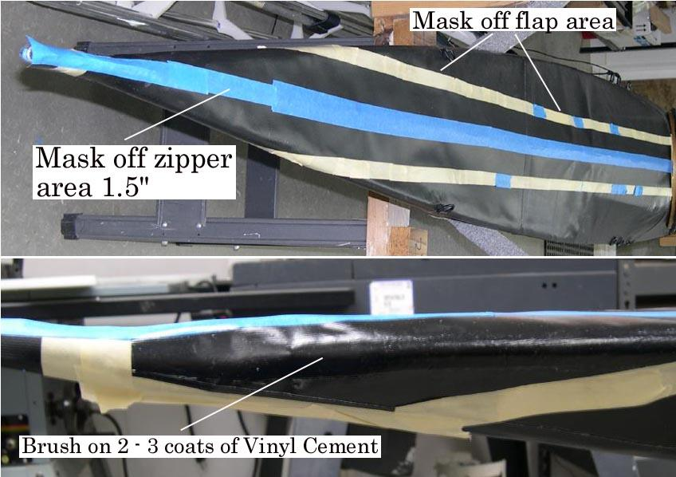

| Zipper to Stem Attachment ( 7 of 11 ) | Menu Previous Page Next Page |
|

Masking and Gluing the Flap - Use masking tape to mark off the outline of the flap. Since The zipper is under the flap during gluing, mask the 1.5" zipper to deck area to keep vinyl cement away from the zipper. Apply 2 - 3 coats of HH-66 Vinyl cement to the zipper flap and the deck.
|
|